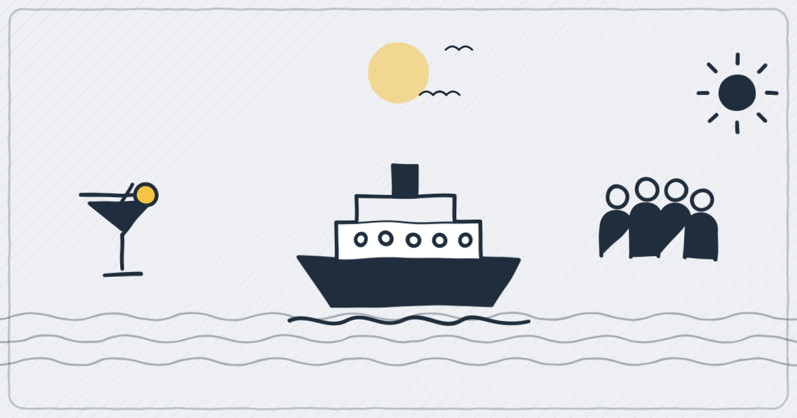

Sail-Away on a Cruise: What It Is and Where to Watch

A sail-away party is the pool-deck celebration as the ship leaves its home port: music from a DJ or band, a drink of the day, the horn, and waving at the shore. It is free, optional, and starts after the muster check-in around departure time. The best views are often at the bow or stern.
Sail-away is the moment the holiday stops being a booking and starts being a trip. The gangway comes up, the horn sounds, a band or DJ plays on the pool deck, and the ship slides away from the pier while people wave at strangers on shore. Nobody has to attend and nothing about it costs money, yet it is the first memory most people keep from a cruise.
What actually happens at sail-away?
Before the party can start, the ship has to complete its safety muster. On most big lines today that means watching a short video in the app or on the cabin TV and then checking in at your assembly station in person. Finish that early and you are free when the deck comes alive.
Then the entertainment team turns the music up around the main pool. There may be a live band, a DJ, line dancing led by the cruise staff, and servers circulating with the day's cocktail in a souvenir glass. As the ship moves off, the captain sounds the horn, often several long blasts, and the pier staff wave back. The whole thing winds down once the ship clears the harbour, typically within an hour.
Where is the best place to stand?
The music is at the pool, but the pool is mid-ship with lifeboats or glass screens blocking the sides. Open decks at the very front or very back give the widest view. On many ships the forward observation deck above the bridge is open at departure, and the aft decks behind the buffet look straight back at the city.
| Home port | What you see leaving | Best rail |
|---|---|---|
| Vancouver (Canada Place) | Stanley Park's seawall, then the Lions Gate Bridge overhead | Forward; port (left) side for the park, then look straight up |
| Seattle (Pier 91 or 66) | Downtown skyline, Space Needle, Mount Rainier on a clear evening | Aft decks |
| Miami | Government Cut, South Pointe Park and the South Beach high-rises | Starboard (right) for the beach; aft for the skyline |
| Fort Lauderdale (Port Everglades) | A narrow channel with people waving from the beach park | Any rail on the channel side; the ship passes very close |
| Galveston | The ship channel, the Pleasure Pier and the seawall | Starboard for the island |
| New York (Manhattan or Brooklyn) | Skyline, Statue of Liberty, under the Verrazzano Bridge | Starboard leaving Manhattan for Liberty; forward for the bridge |
| Quebec City | Château Frontenac above the St. Lawrence | Aft, looking back at the old town |
Vancouver is widely rated among the finest departures anywhere. The ship stays close to Stanley Park and the bridge looks impossibly low as you pass under it. Seattle rewards an evening departure, and Miami's Government Cut puts a sunset over the city behind you.
How do I get a good spot?
- Confirm the departure time in the app. The party builds around that time, not around the hour you boarded.
- Do the muster check-in as soon as you are aboard.
- Collect a snack or a drink from the buffet on your way up; the sail-away servers only sell cocktails.
- Reach the rail 15–20 minutes before the published time. The ship may leave a little late, but the good spots fill early.
- Take your photos, then put the phone down and watch. It really is better in person.
The rail will be crowded, so share it. Cruise photo manners cover how to get the bridge shot without blocking everyone behind you.
What should I wear on deck?
A Vancouver or Seattle departure in May or September turns cold fast once the ship picks up speed, so bring a jacket even if the pier was warm. Florida and Texas sail-aways are hot and bright: hat, sunglasses, and sunscreen, because the first sunburn of a cruise is usually earned on the first afternoon.
What if I am not a party person?
Skip the pool deck. Watch from your balcony, from a quiet aft deck away from the speakers, or from a window seat in a lounge with a drink you chose yourself. The view is the point; the music is optional.
Later sail-aways are often better anyway. Leaving Juneau along the Gastineau Channel, or pulling out of a Caribbean island at dusk, the decks are quieter and the light is lovely. Nobody cares about the first-day party by then.
What comes next?
Once the deck empties, the ship settles into its rhythm. The first dinner is casual, the welcome show runs in the theatre, and your clock may change overnight; how time zones work on a cruise ship explains why your phone and the ship can disagree by morning. If a bar tab is likely, the drink package starts counting from day one, so decide before the first cocktail rather than after.
Want this checked for your own sailing? A licensed cruise consultant can price it up and answer questions for free, with no obligation.
Ask a cruise expert →Worth stepping outside for
Even if you never go near a deck party again, stand at a rail for your first sail-away. The horn, the bridge or skyline, and the moment the pier starts to move are what people mean when they say the cruise has begun.
Still wondering?
How long does a sail-away party last?
Usually 30 to 60 minutes, about the time it takes the ship to clear the harbour. Once the skyline or bridge is behind you the music fades, the deck empties, and people drift off to unpack or find dinner.
Can I watch sail-away from my balcony instead?
Yes, and plenty of people prefer it. You get the views without the speakers, and you can sit down. Check which side of the ship faces the interesting shore, because a balcony on the wrong side sees open water and the back of the terminal.
Is the drink of the day free at sail-away?
No. The music and the moment cost nothing, but the cocktails sold by roaming servers are charged at bar prices, often US$12–15 with service charge, unless you hold a drink package. Water, lemonade and iced tea at the buffet are included.